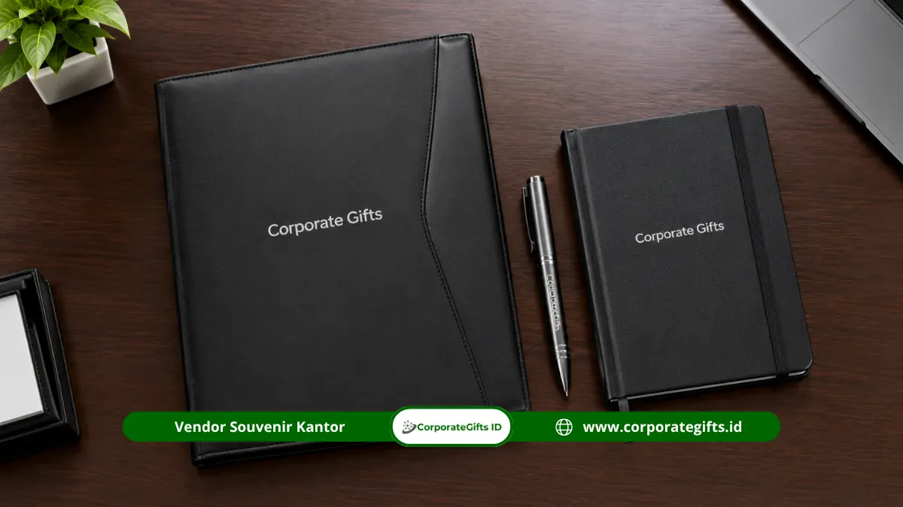

Corporate Gifts ID - Paket souvenir instansi pemerintah adalah kombinasi beberapa produk dalam satu kemasan untuk acara resmi, kunjungan kerja, atau hubungan kelembagaan. Isinya dapat berupa gift box, diffuser, dan mug keramik yang disesuaikan dengan penerima, anggaran, dan identitas instansi. Corporate Gifts membantu panitia merancang isi, kemasan, dan jadwal produksi paket agar tampil representatif.
Poin Kunci Paket Souvenir Instansi:
- Kemasan Terpadu: Paket souvenir memadukan beberapa produk dalam satu kemasan gift box yang rapi dan eksklusif.
- Relevansi Penerima: Komposisi isi paket disesuaikan dengan format acara resmi dan profil tamu penerima.
- Tampilan Formal: Gift box rigid dengan desain presisi mendukung tampilan formal dan representatif di hadapan mitra lembaga.
- Branding Selaras: Desain kemasan, kartu ucapan, dan teknik cetak logo wajib selaras dengan pedoman identitas visual instansi.
- Perencanaan Sinkron: Pilihan isi paket, alokasi anggaran, kuantitas penerima, dan timeline produksi sebaiknya ditetapkan bersamaan.
Apa Itu Paket Souvenir Instansi Pemerintah?
Paket souvenir instansi pemerintah adalah set cendera mata berisi dua produk atau lebih yang dikemas bersama untuk tamu, mitra, atau peserta kegiatan resmi. Pendekatan paket ini mencerminkan penghormatan formal yang lebih berbobot dibandingkan membagikan cinderamata secara terpisah tanpa kesatuan visual.
Pengertian Paket Souvenir dan Gift Set
Gift set adalah paket produk yang dipilih dan disusun sebagai satu kesatuan. Dalam konteks instansi, gift set umumnya memuat produk fungsional yang dikemas dalam kotak berlogo sehingga penerima merasa dihargai secara resmi dan profesional.
Perbedaan Paket Souvenir dan Souvenir Satuan
Souvenir satuan hanya berisi satu produk mandiri, sedangkan paket souvenir berisi kombinasi harmonis antarproduk dan kemasan pelindung. Paket memberi kesan jauh lebih istimewa, tetapi membutuhkan perencanaan isi, tata letak tata letak dalam boks, dan pengemasan yang lebih teliti.
Fungsi Paket dalam Kegiatan Resmi
Paket souvenir berfungsi sebagai wujud penghormatan tertinggi kepada tamu kehormatan dan sekaligus media penguat identitas kelembagaan. Pada kunjungan kerja, penerimaan delegasi antarwilayah, atau penandatanganan kesepakatan bersama, paket yang tertata rapi menunjukkan kesiapan dan keseriusan pihak penyelenggara.
Ide Paket Souvenir Apa yang Cocok untuk Berbagai Kegiatan?
Ide paket souvenir yang cocok untuk kegiatan instansi meliputi paket gift box formal untuk kunjungan kerja, paket mug keramik untuk acara kelembagaan, paket diffuser untuk tamu undangan, dan paket seremoni untuk peringatan:

Mug keramik dan diffuser custom logo untuk cendera mata tamu undangan yang elegan dan fungsional.
Paket Gift Box untuk Kunjungan Kerja
Gift box adalah kotak kemasan, biasanya berbahan karton rigid tebal dengan penutup magnet atau tutup terpisah, yang dapat berisi satu atau beberapa produk pilihan. Untuk agenda kunjungan kerja, kotak dengan logo instansi berlapis poly emas atau perak serta pilihan warna netral terkesan sangat formal dan mudah dibawa oleh tamu delegasi.
Paket Mug Keramik untuk Acara Kelembagaan
Mug keramik adalah cangkir berbahan keramik berkualitas dengan kapasitas umumnya sekitar 300 hingga 350 ml yang dapat dicetak logo atau tema acara secara permanen melalui teknik decal bakar. Mug sangat relevan untuk acara kelembagaan karena dipakai setiap hari di meja kerja. Kemasan individual dengan sekat busa membantu melindungi mug dari benturan selama pengiriman.
Paket Diffuser untuk Cendera Mata Tamu Undangan
Diffuser adalah perangkat pengharum ruangan, baik tipe ultrasonik modern dengan uap air maupun tipe reed diffuser alami dengan batang rotan dan minyak aromatik. Diffuser sangat cocok untuk cendera mata tamu VIP karena memberikan kesan hangat, mewah, dan menenangkan di ruang kerja pimpinan maupun ruang tamu. Pemilihan aroma disarankan berkarakter lembut dan netral agar disukai secara luas.
Paket Souvenir untuk Acara Peringatan Instansi
Acara peringatan milad atau hari bakti instansi membutuhkan paket yang memuat tema, angka tahun peringatan, dan logo lembaga. Kombinasi produk pilihan dengan kotak boks kustom membuat paket bernilai kenang tinggi sekaligus terlihat resmi dan terhormat.
| Konsep Paket Cendera Mata | Isi Utama Paket | Kebutuhan Format Kegiatan |
|---|---|---|
| Gift Box Formal | Hardbox magnetik dan produk pilihan eksekutif | Kunjungan kerja pimpinan & audiensi antarlembaga |
| Paket Mug Kelembagaan | Mug keramik decal bakar & kemasan busa rapi | Rapat koordinasi pimpinan & sarasehan kedinasan |
| Paket Home-Living Elegan | Reed diffuser aromaterapi & aksesori relaksasi | Cendera mata tamu kehormatan & narasumber ahli |
| Paket Seremoni Peringatan | Produk pilihan tematik & hardbox logo kustom | Peringatan hari ulang tahun instansi & seremoni kenegaraan |
Bagaimana Cara Menentukan Isi Paket Souvenir?
Isi paket souvenir ditentukan dengan menyesuaikan produk terhadap profil penerima, memilih kombinasi yang fungsional, membatasi jumlah item, dan menyesuaikannya dengan anggaran:
Menyesuaikan Produk dengan Profil Penerima
Pejabat eselon, pimpinan mitra strategis, dan tamu VIP umumnya menerima produk yang lebih representatif, sedangkan peserta forum publik lebih cocok dengan paket ringkas. Pemetaan kategori penerima membantu panitia menyiapkan segmentasi paket bertingkat (tiering) secara transparan.
Memilih Kombinasi Produk yang Fungsional
Kombinasi yang fungsional, misalnya mug keramik dengan buku catatan agenda kulit, membuat setiap item benar-benar terpakai dalam rutinitas kerja harian. Hindari menyertakan produk yang hanya memenuhi ruang boks tanpa nilai manfaat nyata.
Menentukan Jumlah Item dalam Satu Paket
Dua hingga tiga item biasanya merupakan komposisi paling ideal untuk memberi kesan lengkap tanpa membuat dimensi kotak terlalu besar, berat, dan memicu pembengkakan biaya ongkos kirim.
Menyesuaikan Isi dengan Batas Anggaran
Total anggaran kegiatan kedinasan dibagi proporsional untuk produk fisik, kemasan luar, jasa branding, dan logistik distribusi. Perhitungan cermat menjamin spesifikasi paket tetap mematuhi pagu DIPA yang ditetapkan.
Kemasan Seperti Apa yang Representatif untuk Paket Souvenir?
Kemasan yang representatif untuk paket souvenir instansi adalah gift box berdesain formal dengan material kokoh, warna sesuai identitas lembaga, logo yang proporsional, serta pelindung produk yang aman:
Gift Box dengan Desain Formal dan Rapi
Desain kemasan formal memiliki ciri khas palet warna tegas, tata letak grafis minimalis, dan logo lembaga yang proporsional. Kotak rigid berlapisan kertas fancy memberi kesan mewah, sedangkan kotak model sleeve lipat lebih efisien untuk distribusi skala masif.
Pemilihan Material dan Warna Kemasan
Material karton tebal berlapis kertas linen, jasmin, atau laminasi doff memberikan impresi sentuhan yang elegan. Pilihan warna dasar kemasan sebaiknya mengikuti pedoman visual lembaga (branding guidelines) agar selaras dengan tema backdrop acara.
Penempatan Logo dan Identitas Instansi
Logo instansi dapat diaplikasikan pada bagian tengah penutup boks dengan teknik hotprint emas/perak, cetak emboss timbul, atau sablon foil. Pastikan proporsi logo seimbang dan tidak terkesan berlebihan.
Pelindung Produk untuk Pengiriman Jarak Jauh
Busa hati kustom (EVA foam die-cut), sekat karton presisi, atau shredded paper pelindung wajib disertakan untuk mengunci posisi barang mudah pecah seperti mug keramik atau botol diffuser selama proses pengiriman antarkota.
Spesifikasi dan Estimasi Biaya Apa yang Perlu Dihitung?
Spesifikasi dan biaya paket souvenir yang perlu dihitung mencakup rincian setiap produk, biaya assembling kemasan, kuantitas paket, serta transparansi penawaran harga tertulis.
Sebagai konteks kebijakan belanja pemerintah, Peraturan Presiden Nomor 46 Tahun 2025 yang berlaku sejak 2025 menyatakan bahwa paket pengadaan dengan nilai pagu sampai Rp15 miliar diperuntukkan bagi usaha mikro, usaha kecil, dan koperasi dari hasil produksi dalam negeri. Panitia pengadaan perlu memastikan paket souvenir yang direncanakan sejalan dengan prioritas produk dalam negeri (PDN):
Menentukan Spesifikasi Setiap Produk
Deskripsikan secara detail bahan baku, dimensi ukuran, kapasitas isi, dan warna dasar setiap barang di dalam paket agar pihak vendor memproduksi sampel yang akurat.
Menghitung Biaya Isi Paket dan Kemasan
Jumlahkan biaya seluruh produk, kotak rigid pembungkus, bantalan busa cetak, pita satin, serta biaya jasa cetak logo pada produk dan tutup boks.
Menentukan Jumlah Paket dan Penerima Riil
Pastikan daftar tamu penerima telah tervalidasi dan tambahkan kuota buffer cadangan sebesar 5 hingga 10 persen untuk mengantisipasi kehadiran tamu kehormatan tambahan di hari acara.
Menyusun Rincian Penawaran Paket Tertulis
Surat penawaran harga yang transparan merinci biaya per item dan biaya perakitan, sehingga memudahkan proses audit administrasi pengadaan barang dan jasa.
| Komponen Evaluasi | Detail yang Wajib Ditetapkan |
|---|---|
| Isi Paket | Jenis produk, model fisik, dan variasi aroma/warna item |
| Kemasan Luar | Material karton rigid, ukuran box, lapisan kertas, dan finishing |
| Teknik Branding | Metode cetak logo pada boks dan produk (hotprint/emboss/UV) |
| Kuantitas Pesanan | Jumlah paket pasti beserta alokasi cadangan cadangan 5-10% |
| Jadwal Produksi | Timeline proofing sampel, masa fabrikasi, assembling, dan QC |
| Distribusi Logistik | Metode pengemasan kardus master, ekspedisi, dan tanggal tiba di venue |
Bagaimana Proses Pemesanan Paket Souvenir?
Proses pemesanan paket souvenir berjalan terstruktur dari penentuan konsep, pembuatan mockup digital, persetujuan sampel fisik, hingga tahapan assembling dan pengiriman aman:
- Menentukan Konsep dan Komposisi Paket: Tetapkan tema acara kedinasan, segmen tamu penerima, dan daftar produk yang akan digabungkan dalam gift set.
- Meminta Sampel Mockup Visual: Vendor menyusun visual preview 3D tata letak produk di dalam kotak lengkap dengan simulasi penempatan logo instansi.
- Menyetujui Desain dan Spesifikasi Teknis: Panitia melakukan approval tertulis terhadap sampel boks dan sampel produk sebelum instruksi produksi massal diturunkan.
- Menetapkan Jadwal Produksi dan Pengiriman: Jadwal disusun rapi dengan menyisakan jeda waktu aman minimal 3-5 hari sebelum hari-H kegiatan dinas berlangsung.
Pertanyaan Seputar Paket Souvenir Instansi Pemerintah (FAQ)
Kesimpulan: Wujudkan Paket Cendera Mata Instansi yang Representatif
Paket souvenir membantu instansi menyajikan beberapa produk dalam satu kemasan yang terstruktur dan representatif. Penentuan isi, desain, dan spesifikasi sejak awal mempermudah perencanaan kegiatan kedinasan.
Rencanakan paket souvenir untuk kegiatan resmi instansi Anda dengan menentukan isi, jumlah, desain kemasan, dan jadwal pengiriman. Hubungi Corporate Gifts untuk mendiskusikan kebutuhan paket dan dapatkan penawaran yang sesuai.